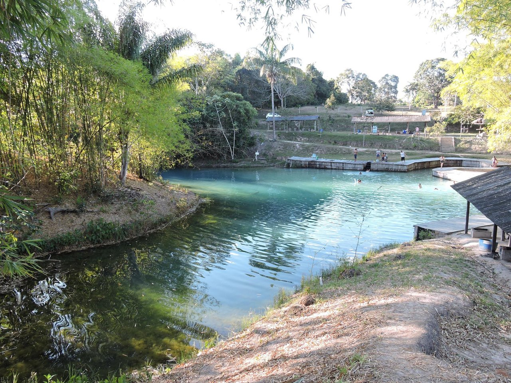

Rondônia é um estado localizado na região Norte do Brasil, fazendo fronteira com a Bolívia. Sua capital é Porto Velho, um importante centro urbano e comercial da região. A economia de Rondônia é baseada na agropecuária, especialmente na produção de gado, soja e milho, além da exploração de madeira e recursos minerais. O estado tem uma forte presença de áreas de floresta amazônica, e seu território é atravessado por vários rios, que desempenham papel importante na navegação e no ecoturismo. Rondônia também possui um rico patrimônio cultural, com influências indígenas, africanas e de migrantes que chegaram durante o ciclo da borracha.
